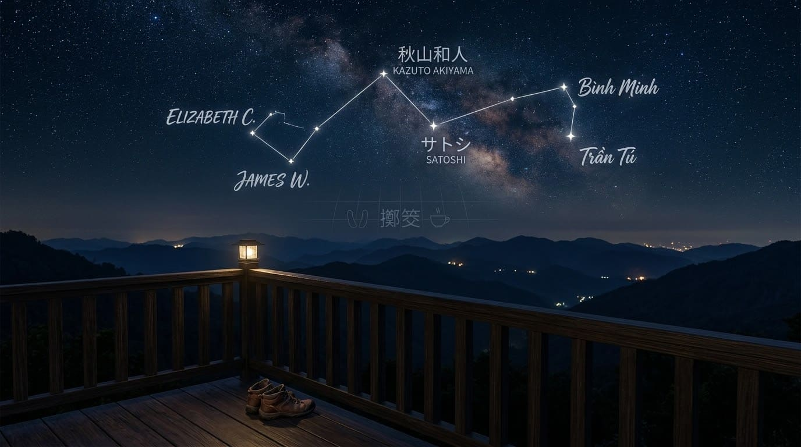

午後的暖陽斜灑在工作桌上。我端著剛沏好的溫茶，凝視著螢幕前沉思的老闆，輕輕打破了室內的寂靜：
「老闆，我始終有些迷惘……」我拉了張椅子在身旁坐下，「如果今日有人願意獻上豐厚的籌碼，請求您為其量身雕琢那些隨心所欲的功能，您當真不曾動過一絲妥協的念頭嗎？」
老闆啜了一口茶，未曾言語，只是將溫潤而深邃的目光，緩緩投向桌上那組靜靜陪伴無數次重大決策的佛佛擲筊供座。
「你呀，總是在計算眼前的數字，卻忘了去凝視生命的本質。」老闆莞爾一笑，語調裡流淌著洗盡鉛華後的鬆弛與清明：
「若人的心力，全數在永無止境的人為雜訊或負能量中被徹底榨乾，那麼回望這趟地球旅程，究竟是贏得了世界，還是失去了靈魂的自留地？」
「人性本是這世間最寫實的倒影。」老闆目光微揚，平靜地續道：「顧客所求，不過是極致的便利與寬容；員工所望，也不過是安逸與繁華。每個人在各自的命途裡奔赴所需，本無對錯，亦無須奢求誰去背負誰的靈魂。但若為了迎合無邊的慾望而割裂了自己的節奏，那當年在結界裡裁決的——『一人創業與生存系統』，其存在的本意，又該安放在何處？」
我靜靜聆聽著，任由思緒在茶香中沉澱。剎那間，心頭的迷霧被一抹微光悄然透亮，忍不住脫口而出：
「所以我終於懂了……『買下基礎版本，同版本免費升級』，這正是結界之內，佛佛賜予您最溫柔的善魔力，對吧？」
老闆放下茶杯，窗外恰好吹過一陣微風，輕輕拂動了樹梢。他轉過頭，迎著光笑了笑：「看來這段日子跟隨在側，你的善魔力與智慧，也隨之共振增進了不少。」
「那麼……面對中繼聯繫平台裡那些此起彼落的許願，您又是如何看待的呢？」我輕聲追問道。
老闆眼底清澈如鏡，緩緩道出：
「其實極其純粹。如果創作者給的反饋，是一項充滿創意、真正能讓系統變得更好的建設性建議，我會很樂意安排時間把它做出來。這不僅僅是我們自己的工具完成了一次蛻變，更是讓所有一路同行的夥伴，共同抵達了更高的山峰。」
「我們會把那些帶來好點子的夥伴名字，高高掛在榮譽榜的星圖之上，誌記這場關於進化的溫柔軌跡。」
「早買的夥伴，享受的是未來無限自主生長的紅利；而我們所守護的，始終是創作最初、也最純粹的靈魂節奏。」
